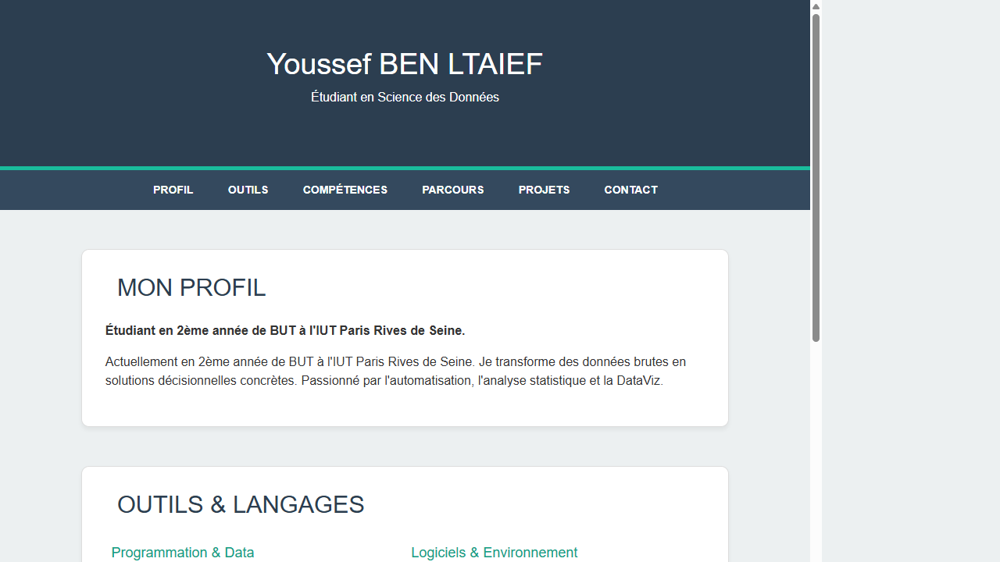

| Nom de la SAE | Développement Web – Portfolio personnel (HTML/CSS/Bootstrap) | |||
| Sujet spécifique | Création d'un portfolio personnel en HTML/CSS en utilisant le framework Bootstrap, présentant le profil, les compétences, le parcours et les projets. |
| Objectifs |
Créer une page web structurée et responsive avec HTML5 et CSS3. Utiliser Bootstrap pour la mise en page et les composants réutilisables. Présenter son parcours de manière claire et professionnelle. Structurer le contenu en sections cohérentes (profil, outils, compétences, parcours, projets, contact). |
| Livrables | Site web (index.html, style.css, bootstrap.min.css) |
| Compétence | Valoriser |
| Apprentissages critiques sollicités | AC23.04 : Prendre conscience de la rigueur requise dans ses productions et la communication |
| AC23.05 : Adapter la communication à l'interlocuteur | |
| AC23.03 : Choisir des indicateurs pertinents pour communiquer sur les résultats | |
| Composantes essentielles à respecter | Présentation claire et professionnelle adaptée à un recruteur ou enseignant. |
| Structure logique : chaque section répond à une question précise (qui suis-je, quels projets...). | |
| Rendu soigné visuellement (cohérence des styles, lisibilité). |
| Compétence | Collecter |
| Apprentissages critiques sollicités | AC11.03 : Décrire et documenter une démarche de collecte et de structuration de données |
| Composantes essentielles à respecter | Structurer le contenu en sections HTML sémantiques (header, nav, main, section, footer). |
| Documenter et organiser le code CSS de façon lisible et maintenable. |
| Savoirs / connaissances | Savoir-faire | Savoir-être |
|---|---|---|
|
HTML5 : balises sémantiques, structure d'une page web. CSS3 : sélecteurs, propriétés de mise en page (flexbox, padding, margin). Bootstrap : grille (grid), composants (navbar, cards, buttons). Navigation interne : ancres HTML (#section-id). |
Créer une structure HTML complète avec header, nav, sections et footer. Utiliser Bootstrap pour créer une mise en page responsive. Personnaliser le CSS Bootstrap avec une feuille de style complémentaire. Organiser la navigation interne avec une barre de liens (#profil, #projets…). |
Souci du détail dans la présentation (un portfolio, c'est une vitrine). Autonomie dans l'apprentissage du HTML/CSS. Sens de la communication : adapter le contenu à l'audience cible (recruteurs, enseignants). |
Ce que je trouve bien réalisé, pourquoi ?
La structure de la page est claire et logique : chaque section (Profil, Outils, Compétences, Parcours, Projets, Contact) correspond à un besoin précis. L'utilisation de Bootstrap facilite la mise en page responsive. C'est une base solide que j'ai ensuite enrichie dans la version avancée du portfolio.
Ce que je n'ai pas bien compris ; ce qui serait à améliorer pour une prochaine fois : pourquoi ? comment ?
La personnalisation CSS au-delà de Bootstrap (overrides, variables CSS) n'était pas encore maîtrisée. Pour une prochaine fois : apprendre les variables CSS (custom properties) dès le début pour éviter de dupliquer les valeurs ; mieux structurer le CSS (sections commentées, ordre logique).
